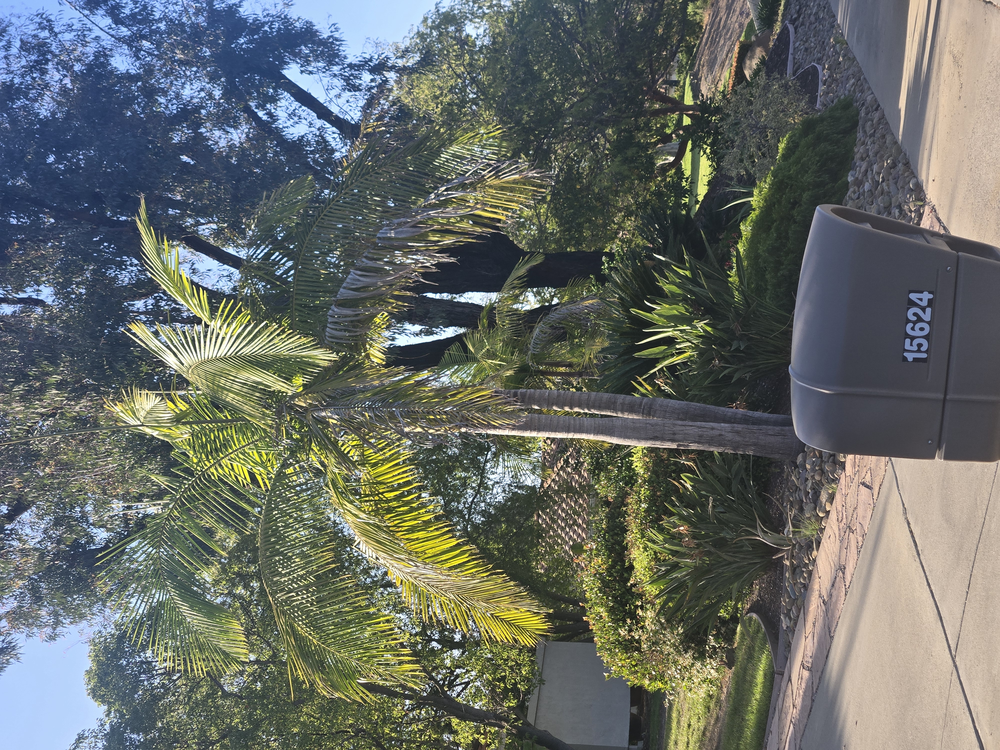
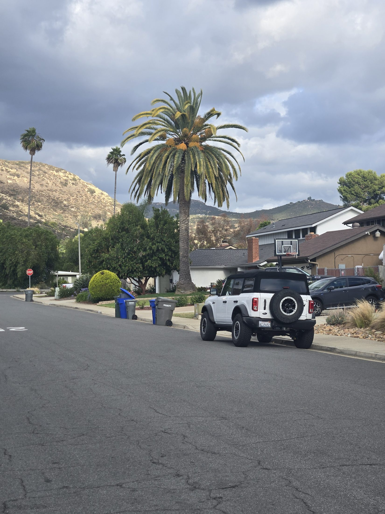

Yellowing fronds, thinning crowns, brown tips, weak new growth, and stressed palms are often signs that something needs attention.
San Diego Palm Protection helps homeowners identify visible palm stress, improve growing conditions, and build practical recovery plans for valuable palms.
Mature and specimen palms are often major visual centerpieces of a San Diego property. Long-term health, monitoring, and early attention can help protect their beauty and value.

Yellowing, thinning, and discoloration can sometimes point to nutrient imbalance, irrigation issues, or root stress.

Overtrimming may weaken palms over time and contribute to reduced vigor and recovery.

Brown fronds, thinning canopy, and changes in growth may warrant closer evaluation.
Palms can decline slowly before the problem becomes obvious. Early assessment can help determine whether the issue is nutrition, irrigation, pruning stress, pest pressure, or general site conditions.
Yellowing can be related to nutrient deficiencies, watering problems, soil conditions, or age-related frond decline.
Burned-looking tips, crispy margins, or patchy browning can signal water stress, nutrient imbalance, wind exposure, or transplant stress.
The newest spear and crown growth are especially important. Weak, distorted, or discolored new growth deserves attention.
Excessive pruning can weaken a palm, reduce photosynthesis, and make the tree look stressed or thin.
Large Canary Island date palms, Bismarcks, and other specimen palms are expensive to replace and worth evaluating early.
Visible decline, crown changes, oozing, boring damage, or sudden collapse may call for closer pest-risk monitoring.
A declining palm should not be treated blindly. The right plan depends on the species, location, irrigation pattern, soil, pruning history, visible symptoms, and overall value of the palm.

The goal is to improve the palm’s growing conditions and reduce avoidable stress before the decline becomes expensive or irreversible.
Important: Some palms can recover well with better care and early intervention. Others may already be too far gone. A free photo assessment is a simple first step before deciding whether treatment, monitoring, or replacement makes sense.
This service is especially useful for high-value, visible, or emotionally important palms that define the look of a property.
Large CIDPs are expensive to remove and replace. Early prevention, monitoring, and nutrient support can be worth it.
Silver Bismarcks and other statement palms deserve careful placement, irrigation, nutrition, and stress monitoring.
Palms near entries, patios, pools, driveways, and courtyards often carry the most visual and property-value impact.
Text or email photos for a free first look. Include a full photo of the palm, the crown if visible, the trunk, and any areas that look brown, thinning, wet, damaged, or unusual.
📞 Call or Text 262-492-3135